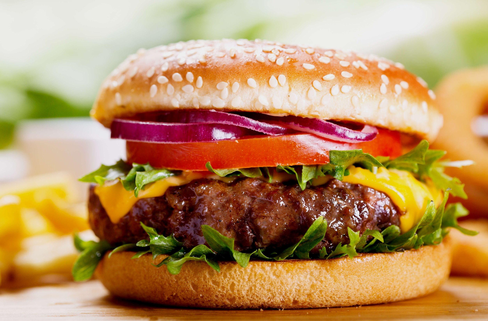

Home
How to make a Hamburger

Description
A hamburger is a classic American dish made from ground beef patties, seasoned with salt and pepper, then grilled or pan-fried to your desired level of doneness.
The patties are typically served in a soft bun, often toasted, and can be topped with a variety of ingredients such as lettuce, tomato, cheese, onions, pickles, ketchup, mustard, or mayonnaise.
The versatility of the hamburger allows for endless customization,
making it a popular and satisfying meal enjoyed worldwide.
Ingredients for a Hamburger
- 1 lb Ground Beef
- Salt (to taste)
- Black Pepper (to taste)
- Hamburger Buns
- Toppings (optional)
- Lettuce
- Tomato slices
- Onion slices (raw or grilled)
- Cheese slices (cheddar,American, Swiss, etc.)
- Pickles
- Ketchup, Mustard, or Mayonnaise
Steps to make a Hamburger
- Prepare the Patties
- Divide the ground beef into 4 equal portions (for 4 burgers). Gently shape each portion into a round patty, about 3/4 inch thick.
Use your thumb to make a small indentation in the center of each patty to help it cook evenly.
- Season both sides with salt and black pepper.
- Cook the Patties
- Heat a grill or a skillet over medium-high heat. If using a skillet, add a small amount of oil to prevent sticking.
- Cook the patties for about 3-4 minutes per side for medium doneness (longer if you prefer your burger more well-done). If adding cheese,
place a slice of cheese on the patty during the last minute of cooking to melt.
- Toast the buns
- While the patties are cooking, slice the hamburger buns in half.
Toast the buns on the grill or in a separate skillet for about 1-2 minutes until golden brown.
- Assemble the Burger
Place the cooked patty on the bottom half of each bun.
Add your preferred toppings (lettuce, tomato, onions, pickles, etc.), then place the top half of the bun on top.
- Serve
- Serve your homemade hamburger with sides like fries or a salad, and enjoy!